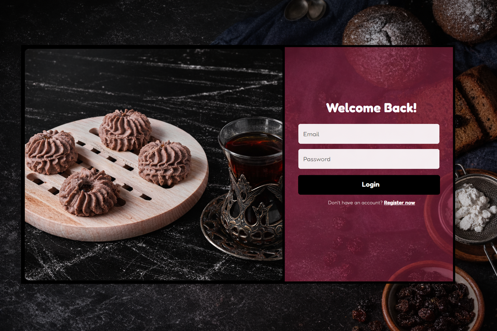
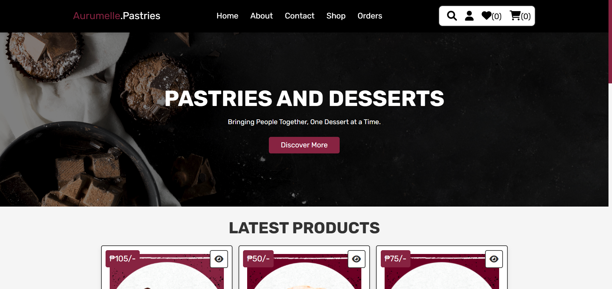
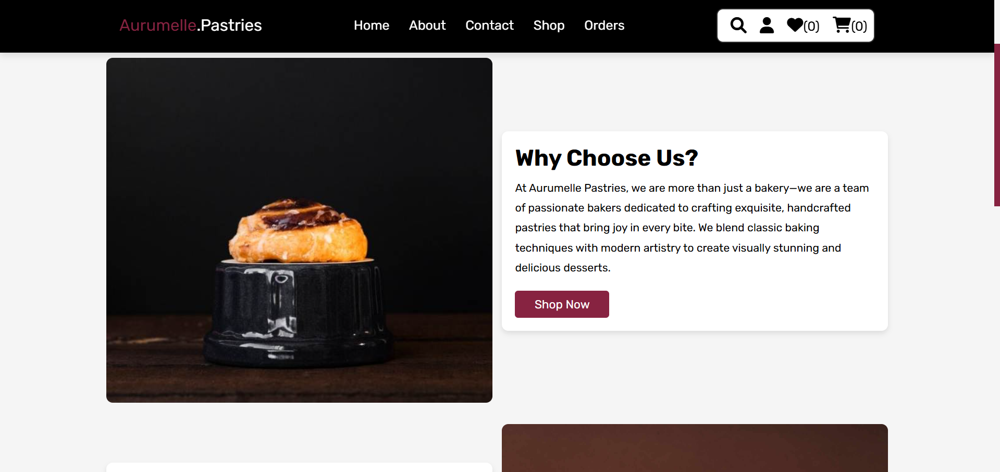

The Objective
Aurumelle Pastries is an e-commerce website designed to provide customers with a convenient and secure way to purchase pastries and desserts online.
The system supports two user roles: Customer and Administrator. Customers can browse products, add items to their cart or wishlist, place orders, and track payment status, while administrators manage products, orders, and user accounts through a dedicated dashboard.
System Architecture
Identity Access
Secure multi-role authentication with dedicated profile management for users and administrators.
Smart Discovery
Dynamic product catalog featuring high-res imagery and real-time search for seamless browsing.
Conversion Flow
Optimized cart logic and order summaries designed to streamline the journey from selection to checkout.
Order Lifecycle
End-to-end tracking for customers with granular status controls for administrative fulfillment.
Data Persistence
Relational MySQL storage ensuring ACID-compliant transactions and secure encrypted user data.
Business Intel
Comprehensive sales analytics, order statistics, and management tools for strategic monitoring.